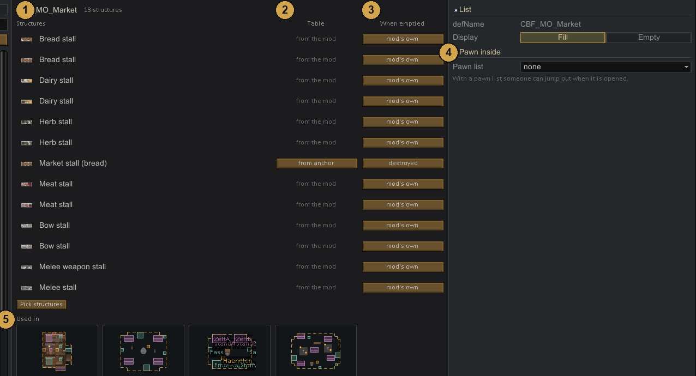
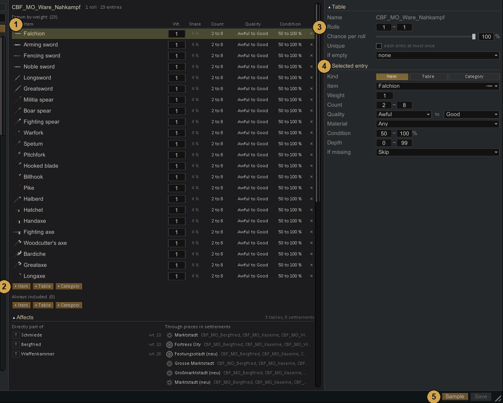
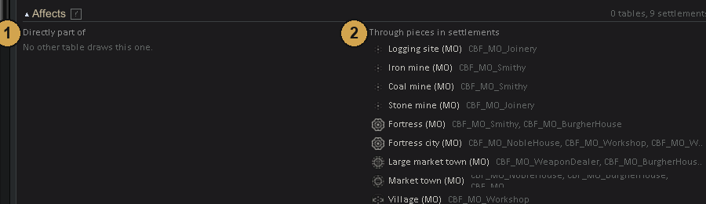
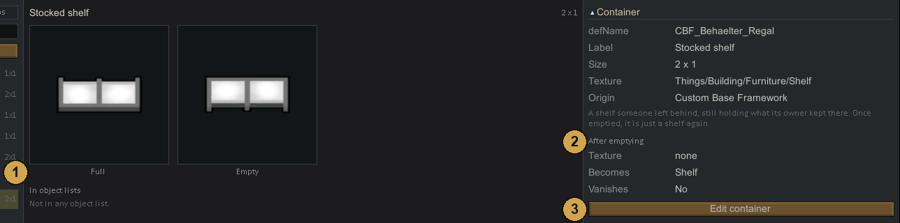

Loot
Loot
Use the Loot tab to configure objects and their contents separately. An object list might choose between a barrel and a crate; a loot table then supplies the food stored inside. Anchors in a piece connect those lists to positions in the building. The tab also manages crop lists and construction materials.
The buttons at the top of the list switch between five parts: Lists (object lists), Tables (loot tables), Containers, Crops (crop lists) and Materials (material lists). Material lists have a page of their own: Material lists. + New creates an entry in the current part. Open opens the file of the selected entry in your text editor.
Changes reach the file only when you press Save at the bottom right.
Object lists
An object list is a set of structures that a Loot or Object anchor may place, for example shelves, crates or market stalls. At a Loot anchor the structures are also filled with goods from a loot table.

- Structures in the list. Pick structures below them adds more.
- Table: the loot table that fills this structure. from anchor means the table set on the anchor is used. from the mod means the mod that brings the structure fills it itself; it appears when When emptied is mod's own.
- When emptied: what the structure becomes once it has been searched. Click to change it.
- destroyed: it disappears and leaves no materials.
- open: the structure itself is placed and the loot lies visibly on it. It stays as it is.
- mod's own: loot, occupants and empty look come from the mod that brings the structure, as if it had been placed by hand. Only offered for structures whose mod has an empty look of its own, such as Medieval Overhaul's market stalls.
- Any other entry is a building of the same size that replaces it.
- Pawn inside on the right: someone can wait in a container and come out when it is opened. Pick a pawn list, then set the Chance per container and the Count. With Hostile ticked, the pawn attacks when the container is opened: animals go manhunter, people go berserk, or belong to the faction picked under Faction. Without Hostile, people belong to the faction of the settlement.
- Used in: the pieces whose anchors use this list. Click a tile to open the piece.
Display on the right decides the use of the list: Fill fills the containers with loot, Empty places them as plain furniture.
The ... button next to an object list in the Piece tab opens a preview of the list. Changes made there can be undone, and a Save button appears while the list has unsaved changes.
Loot tables
A loot table decides which goods end up in a container. An entry is a single item, a whole category of things, or another table. Small tables can therefore be combined into big ones.

- Entries. Under Drawn by weight, each roll picks one entry. The higher its weight (Wt.), the more often it comes. Share shows the resulting chance in percent. Each entry also has a Count, a Quality range and a Condition (hit points in percent). Entries under Always included come every time the table is used, each with its own Chance.
- + Item, + Table and + Category add entries. Both sections have these buttons.
- The table itself, on the right:
- Rolls: how many entries are drawn by weight, as a range.
- Chance: checked once each time the table is used. If it fails, nothing is drawn by weight. Entries under Always included still come.
- Unique: each entry is drawn at most once.
- If empty: a table that is drawn instead when this one yields nothing.
- Selected entry: the entry clicked in the list. Kind switches between Item, Table and Category. For a category, Up to tech leaves out things above that tech level. For an item, Material sets the stuff it is made of. If missing decides what happens when the item does not exist, usually because its mod is not loaded:
- Skip: the entry drops out.
- Use a fallback: the things listed under
fallbackThingsin the file are tried in order. - Silver of equal value: silver comes instead. The amount is the entry's count, not the value of the item.
- Sample opens a preview of the saved table: every entry as a tile, with count and weight in the tooltip. Click a nested table to look inside it.
A table shown in red in the list on the left has no entry that exists in the game, usually because a mod is missing. Settings the tab cannot edit, such as curves over depth, are named below the selected entry and kept when you save.
Affects
Below the entries, Affects shows where the table ends up.

- Directly part of: the tables that draw this one, with the weight they give it, or always for an entry under Always included. Click one to open it.
- Through pieces in settlements: the settlement types that reach this table through their pieces, with those pieces named. Click one to open it.
Below them, tiles show every piece that uses the table, directly or through an object list. The anchors that use it are highlighted in the tiles, and the tooltip names them. Click a tile to open the piece.
Containers
A container is a building that holds loot and changes its look once emptied, for example a stocked shelf that turns into an empty shelf.

- Full and Empty image side by side. In object lists below them names the object lists that contain this container.
- After emptying: the empty image (Texture), a building it Becomes, and whether it Vanishes.
- Edit container opens the container window with this container as the template.
Crop lists
A crop list is a weighted list of plants for fields and pens. Several fields and pens can name the same list. Change the list once and all of them follow.
CBF ships no crop lists; its fields pick their plants one by one. Create a list with + New in the Crops tab when several fields should share the same plants.
- Plants with weight (Wt.) and share. Pick plants opens the plant picker.
- Used in: the fields and pens that name this list. Click one to open its settlement type.
- Each field and pen picks its list in the Settlement tab, row Crop list. Without a list, the plants chosen for that field one by one apply.